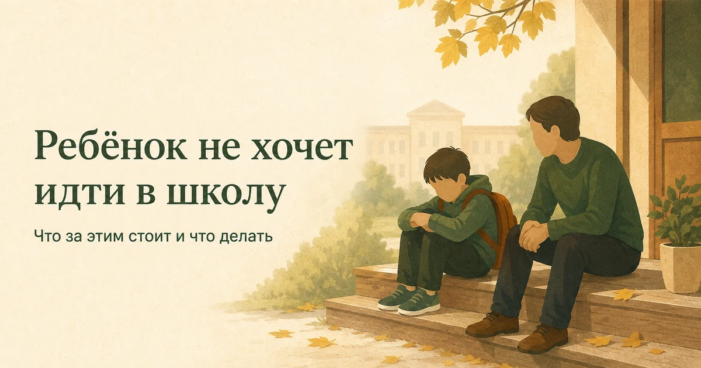
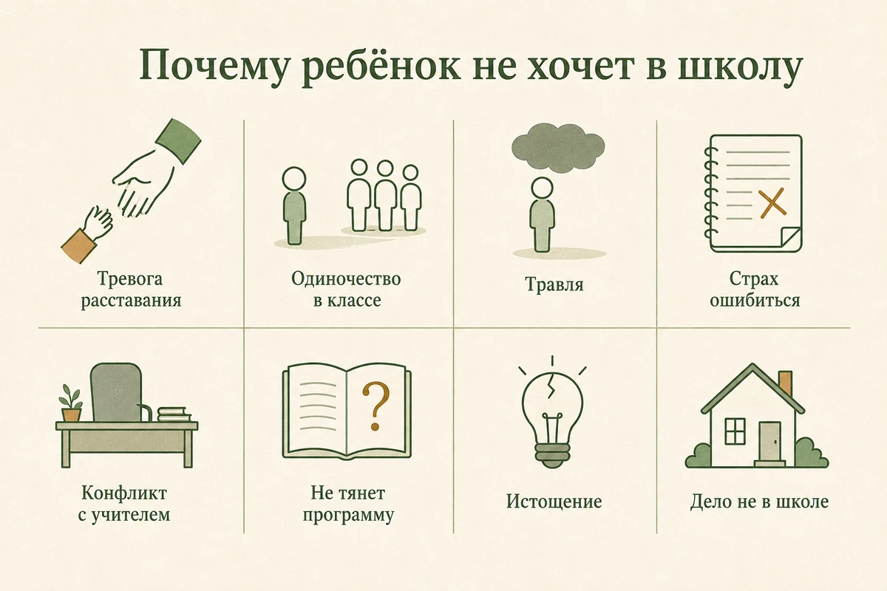
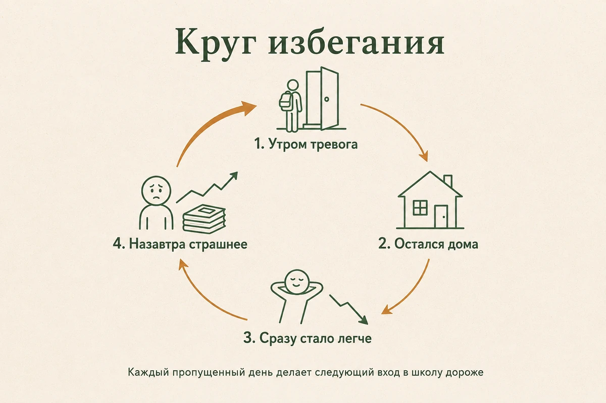
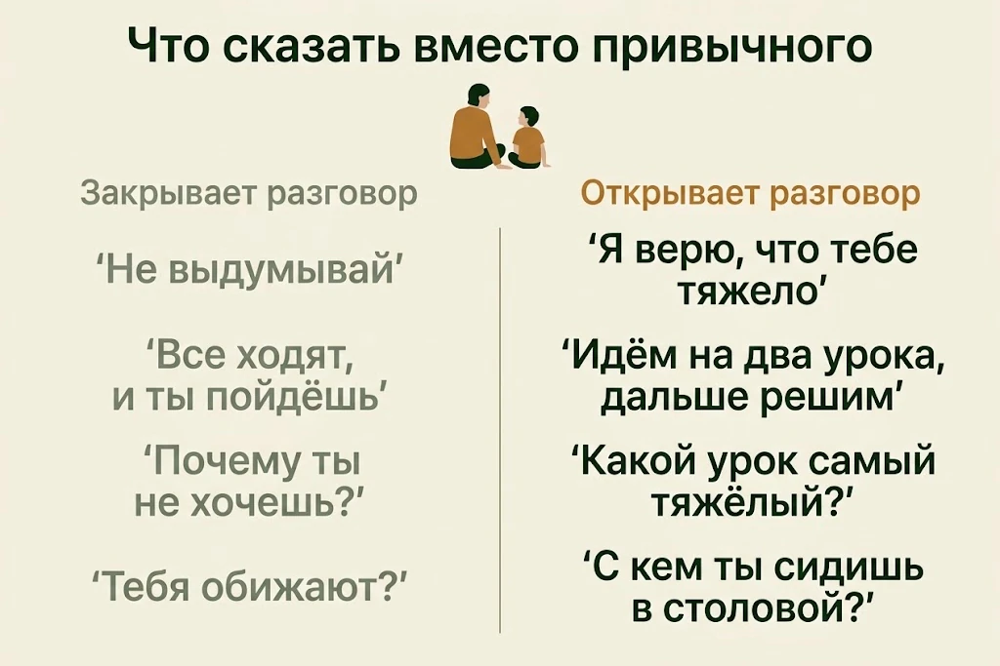
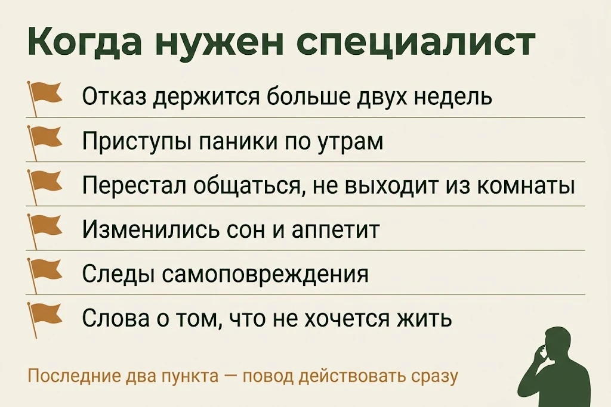

Главная → Блог → Ребёнок не хочет в школу
Ребёнок не хочет идти в школу: почему и что делать родителю
Обновлено: 01.09.2026 · 18 минут чтения

«Не хочу в школу» почти никогда не означает «мне лень». Ребёнок плачет по утрам, жалуется на боль в животе, тянет со сборами и просит остаться дома — а за этим обычно стоит что-то конкретное: страшно отвечать у доски, некуда сесть в столовой, унижает одноклассник, не получается по программе или просто не осталось сил. Ребёнок называет это одним словом «не хочу», потому что не умеет назвать иначе, а иногда — боится, что после разговора станет только хуже. Задача взрослого не в том, чтобы выиграть утренний спор, а в том, чтобы понять, что именно стало невыносимым, и убрать это. Ниже — восемь настоящих причин отказа, как отличить тревогу от лени, что говорить вечером и утром, каких ошибок избегать и в какой момент нужен специалист.
- Почему ребёнок не хочет в школу: 8 настоящих причин
- Лень или тревога: как отличить
- Болит живот по утрам: почему это не притворство
- Круг избегания: почему один пропущенный день тянет за собой месяц
- Что стоит за отказом в разном возрасте
- Разговор вечером: 7 шагов, чтобы ребёнок заговорил
- Утро: что делать, когда он уже плачет
- 7 ошибок, которые делают почти все
- Если причина — травля
- Если причина — учитель, оценки или страх ошибиться
- Если ребёнок не ходит уже неделями
- Ваша тревога и вина — это тоже часть картины
- Когда нужен специалист и к кому идти
- Частые вопросы
Почему ребёнок не хочет в школу: 8 настоящих причин
Отказ идти в школу — это следствие, а не причина: на пустом месте он возникает редко. Дальше — то, что чаще всего скрывается за словами «просто не хочу». Причин может быть несколько сразу, и почти каждая из них выглядит со стороны одинаково: капризы по утрам.
1. Тревога расставания. Ребёнку страшно не в школе — ему страшно без вас. Он боится, что дома что-то случится, пока его нет. Типично для младших классов, но случается и после переезда, развода, болезни или смерти в семье в любом возрасте.
2. Социальная тревога и одиночество в классе. Не с кем сидеть, не с кем идти на перемене, страшно заговорить первым. Формально ребёнка никто не обижает — и именно поэтому он не может объяснить, что не так. Столовая и раздевалка при этом пугают сильнее уроков: там нет учителя и нет заданной роли.
3. Травля. Причина, о которой ребёнку труднее всего рассказать. Дети молчат о ней месяцами — из стыда, из страха, что вмешательство взрослых сделает хуже, и из убеждённости, что «сам виноват». Подробнее — в разделе про травлю.
4. Страх ошибиться и оценки. Вызов к доске, контрольная, красная паста в тетради. Особенно уязвимы отличники и дети, которых дома хвалят за результат: любая четвёрка становится доказательством, что «я не справляюсь». Ошибка переживается не как «я чего-то не знаю», а как «со мной что-то не так».
5. Конфликт с учителем. Публичное замечание, насмешка при классе, несправедливая оценка. Взрослому это кажется мелочью, для ребёнка учитель — фигура власти, от которой невозможно уйти пять дней в неделю.
6. Учебная неуспешность. Ребёнок перестал понимать материал и каждый урок сидит в ощущении провала. Иногда за этим стоят объективные трудности — с чтением, счётом, вниманием, — которые не «лечатся» дополнительными часами занятий и требуют диагностики.
7. Истощение. Школа плюс три кружка, репетитор и сон по шесть часов. Это уже не про мотивацию: у ребёнка кончился ресурс, и организм тормозит его единственным доступным способом. Механика та же, что у эмоционального выгорания у взрослых.
8. Дело не в школе. Развод, конфликты родителей, болезнь близкого, появление младшего ребёнка, переезд. Школа тут — просто место, куда труднее всего выйти из дома, где всё и так шатко.

Лень или тревога: как отличить
Главное различие — в том, что происходит вне школьного утра. Ребёнок, которому просто неохота, остаётся собой: играет, гуляет, спорит, строит планы на выходные. Ребёнок в тревоге сужается — у него портится сон, исчезают друзья и удовольствие от того, что раньше нравилось.
| Признак | Похоже на «неохота» | Похоже на тревогу или отказ |
|---|---|---|
| Как началось | Всегда было так, особенно по понедельникам | Резко, с конкретного дня или после события |
| Тело по утрам | Жалоб нет, просто вялый | Живот, голова, тошнота — только в учебные дни |
| Реакция на «собираемся» | Ворчит, тянет время, но идёт | Слёзы, паника, цепляется, прячется, кричит |
| Выходные и каникулы | Такой же вялый, оживает к вечеру | Полностью другой человек, тревога уходит |
| Воскресный вечер | Обычный | Настроение падает заранее, трудно уснуть |
| Что говорит о школе | «Скучно», «зачем это нужно» | «Я не могу», молчит, переводит тему, злится на вопрос |
| Остальная жизнь | Друзья, игры, интересы на месте | Сузилась: меньше общения, меньше интереса, хуже сон |
И ещё одно: «лень» — это не объяснение, а оценка. Она закрывает разговор в тот момент, когда его нужно начинать. Даже если ребёнок действительно избегает усилий, стоит спросить, почему усилие стало таким дорогим именно сейчас.
Болит живот по утрам: почему это не притворство
Боль может быть настоящей, даже если обследование ничего не находит. Тревога напрямую влияет на работу нервной системы и кишечника: меняется моторика желудочно-кишечного тракта, напрягаются мышцы, учащается сердцебиение. Отсюда спазмы, тошнота, головная боль, иногда рвота — это физиология стресса, а не выдумка. К обеду, когда угроза отменяется, всё проходит — и именно это выглядит для взрослого как доказательство обмана.
Обвинение во вранье здесь особенно дорого обходится: ребёнок получает подтверждение, что ему не верят, и в следующий раз просто перестанет говорить, что ему плохо. Правильный порядок другой: сначала показать педиатру, чтобы исключить болезнь, а потом работать с тревогой, не отменяя самого факта боли.
Чем это можно сказать вслух: «Я верю, что у тебя правда болит. Так бывает, когда сильно тревожно — тело реагирует по-настоящему. Давай сходим к врачу, а заодно разберёмся, что тебя так напрягает».
Круг избегания: почему один пропущенный день тянет за собой месяц
Избегание работает как обезболивающее с обратным эффектом: облегчает сейчас и делает хуже потом. Ребёнок остался дома — тревога упала за десять минут. Мозг запомнил: не идти = спастись. На следующее утро тревога приходит раньше и сильнее, потому что теперь к страху школы добавился страх пропущенного, невыполненного и вопросов одноклассников.

Отсюда практический вывод, который противоречит интуиции: возвращать нужно быстро и по частям. Не «отдохни неделю и потом сразу полный день», а «сегодня два урока, завтра до обеда». Каждый выдержанный кусок даёт ребёнку опыт: я был там, было тяжело, и я справился. Именно этот опыт разбирает круг, а не уговоры и не обещания.
Это не значит «тащить силой в любом состоянии». Если ребёнок в панике, задача на сегодня — не урок, а снижение накала. Но целью остаётся возвращение, а не бессрочная пауза.
Что стоит за отказом в разном возрасте
Один и тот же отказ в шесть и в четырнадцать лет означает разное.
- Первоклассник. Чаще всего адаптация и тревога расставания. Слёзы в первые недели — обычное дело, и у большинства детей это постепенно сходит на нет за первые месяцы. Настораживает, если к концу второго месяца становится тяжелее, а не легче.
- Начальная школа. Учитель как главная фигура, страх сделать неправильно, первые устойчивые отношения в классе. Здесь особенно сильно бьёт публичное замечание.
- Средняя школа, 10–13 лет. Положение в группе выходит на первый план: «где я в иерархии», «с кем я сижу», «кто меня позвал». Конфликты в этом возрасте становятся устойчивее, а травля — заметнее. Добавляется предметная система: учителей много, привычная опора на одного взрослого теряется.
- Подросток, 14–17 лет. К школьным причинам добавляются нагрузка перед экзаменами, сравнение себя с другими и настоящие расстройства настроения. Отказ ходить в школу у подростка может оказаться одним из первых заметных признаков депрессии, которую дома долго читают как лень и грубость, — как отличить одно от другого, разобрано в статье о подростковой депрессии.
У подростков есть и сезонная составляющая: часть спада, который начинается вместе с учебным годом, приходится на осеннее снижение настроения. Отличить его от школьной причины помогает простой вопрос: тяжело только в школьные дни или одинаково тяжело всегда.
Разговор вечером: 7 шагов, чтобы ребёнок заговорил
Утро — худшее время для выяснения причин. Разговор нужен вечером или в выходной, когда никто никуда не опаздывает.
- Выберите время без спешки и без свидетелей. Хорошо работает разговор боком: в машине, на прогулке, за мытьём посуды. Взгляд глаза в глаза усиливает ощущение допроса.
- Начните с наблюдения, а не с претензии. «Я заметил, что последние две недели утром тебе очень тяжело. Я не ругаться — я хочу понять». Ребёнок должен услышать, что разговор безопасен.
- Не спрашивайте «почему». На «почему ты не хочешь в школу» честного ответа нет ни у кого — ребёнок сам не знает формулировки. Спрашивайте конкретное: какой урок самый тяжёлый, кто рядом на перемене, с кем ты обедаешь, что происходит в классном чате, кого ты рад видеть утром.
- Выдержите паузу. После вопроса молчите дольше, чем комфортно. Дети выдают главное в тот момент, когда взрослый перестаёт заполнять тишину.
- Не спорьте с чувством. Никаких «да ерунда», «все через это проходят», «в моё время». Подойдёт: «Понял. Это правда тяжело». Сначала признание, потом разбор.
- Не обещайте невозможного. Ни «ты больше никогда туда не пойдёшь», ни «я никому не скажу» — второе особенно опасно, если речь о травле. Честнее: «Я не буду ничего делать за твоей спиной. Мы решим вместе, что я скажу и кому».
- Закончите одним конкретным шагом. Не планом спасения, а действием на завтра: пересесть, попросить учителя не вызывать неделю, пойти на два урока, вместе написать классному руководителю.

— Я не пойду завтра.
— Хорошо, я услышал. Скажи, завтра тяжелее из-за чего-то конкретного? Контрольная, физкультура, кто-то в классе?
— Просто не хочу.
— Понял. Тогда так: я не буду выпытывать сейчас. Но давай договоримся про завтра — ты идёшь на первые два урока, и я забираю тебя после. А вечером ты мне расскажешь, как прошло. Идёт?
Ответы детей часто короткие и невнятные, но по ним уже видно, куда смотреть дальше.
| Что говорит ребёнок | Что проверить в первую очередь |
|---|---|
| «Мне страшно» | Чего именно: урок, ответ у доски, перемена, дорога, конкретный человек |
| «У меня болит живот» | Сначала педиатр, затем — в какие дни и в какое время болит |
| «Меня никто не трогает» | Косвенные признаки травли: вещи, синяки, перемены, классный чат |
| «Я тупой, ничего не понимаю» | Учебные трудности и реальный объём нагрузки, а не старательность |
| «Не хочу видеть учителя» | Что именно было сказано и при ком; был ли это разовый эпизод |
| «Просто не хочу» | Разберите день по кускам: дорога, первый урок, перемены, столовая, продлёнка |
Утро: что делать, когда он уже плачет
Утром задача одна — снизить накал и выйти из дома, а не установить истину. Любое «объясни немедленно» в семь утра усиливает панику и съедает время.
- Говорите короткими фразами и медленно. Ваш тон для ребёнка сейчас важнее слов.
- Не спорьте о причинах и не читайте нотаций — отложите это на вечер.
- Помогите физически: соберите портфель вместе, подайте одежду. При сильной тревоге простые действия даются с трудом.
- Сократите число решений: не «пойдёшь или нет», а «идём к первому уроку или к третьему».
- Договоритесь о минимуме — два урока, полдня, «дойдём до ворот и решим там».
- Предупредите классного руководителя заранее, чтобы ребёнок не заходил в класс в положении провинившегося.
- Прощайтесь коротко. Долгие уговоры у входа продлевают тревогу, а не успокаивают.
- Вечером обязательно отметьте, что получилось: «Ты пошёл, хотя было тяжело. Это много».
7 ошибок, которые делают почти все
Ошибка 1. Допрос. Серия вопросов подряд на повышенной громкости даёт один результат: ребёнок отвечает «не знаю» и закрывается. Один вопрос — пауза — реакция на ответ.
Ошибка 2. «Не выдумывай». Обесценивание закрывает канал связи надолго. Ребёнок делает вывод не «я выдумал», а «взрослым говорить бесполезно».
Ошибка 3. Наказания как главный инструмент. Отобранный телефон не убирает страх перед доской — он добавляет к нему злость и одиночество. Наказание может заставить подчиниться, но не трогает ни страх, ни травлю, ни отставание по программе, то есть не убирает причину.
Ошибка 4. Бессрочное освобождение. «Сиди дома, пока не захочешь» звучит милосердно, а на деле запускает круг избегания: чем дольше пауза, тем страшнее вернуться.
Ошибка 5. Сравнение. «Твоя сестра в твоём возрасте», «а вот Петя» — прямой удар по самооценке, из-за которого ребёнок перестаёт рассказывать о трудностях вообще.
Ошибка 6. Действия за спиной. Пойти к учителю «по секрету» и попасться — значит потерять доверие в тот момент, когда оно нужнее всего. Договаривайтесь заранее о том, что и кому вы скажете.
Ошибка 7. Сразу менять школу. Иногда перевод действительно необходим — например, если школа не останавливает травлю. Но как первый шаг он часто просто переносит проблему: если дело в социальной тревоге или страхе ошибки, в новом классе через месяц повторится то же самое, а к нему добавится роль новенького.
Если причина — травля
О травле дети почти никогда не сообщают прямо. Смотрите на косвенное: пропадают и ломаются вещи, появляются синяки без объяснения, ребёнок избегает перемен и столовой, просит забирать пораньше, перестал звать друзей, вздрагивает от уведомлений в телефоне, стал уходить из дома раньше или другим маршрутом.
Что делать:
- Скажите главное вслух. «Ты не виноват. Так поступать с тобой нельзя. Мы это остановим». Ребёнок почти всегда уверен в обратном.
- Соберите факты. Даты, что произошло, кто участвовал, кто видел. Сохраните скриншоты переписок и чатов — это понадобится в разговоре со школой.
- Идите к классному руководителю, а затем письменно к администрации. Устные обращения теряются. Заявление в двух экземплярах с отметкой о принятии — не конфликт, а фиксация. В заявлении можно прямо сослаться на закон: за обучающимся закреплено право на «уважение человеческого достоинства, защиту от всех форм физического и психического насилия, оскорбления личности, охрану жизни и здоровья» (п. 9 ч. 1 ст. 34 Федерального закона № 273-ФЗ «Об образовании в Российской Федерации»).
- Не выясняйте отношения с ребёнком-обидчиком напрямую. Это почти всегда ухудшает положение вашего ребёнка в классе. Взрослые разговаривают со взрослыми.
- Не советуйте «дай сдачи» как единственное решение. Ребёнок, который слабее или один против группы, получает от этого совета только подтверждение, что справляться придётся самому.
- Дайте опору вне школы. Секция, двор, кружок, родственники — любое место, где у него нормальный статус и есть друзья. Это заметно снижает ущерб.
- Если школа бездействует — обращение в управление образования и перевод. Здесь смена школы уже оправдана.
Следы травли остаются надолго и во взрослом возрасте всплывают как недоверие, самокритика и ожидание отвержения — об этом подробнее в статье о детских травмах и их следах.
Если причина — учитель, оценки или страх ошибиться
Начните с того, что снимете ставку с результата. Ребёнок, который боится ошибиться, живёт в режиме постоянного экзамена, и дома этот режим часто продлевается вопросом «что получил».
- Меняйте вопрос с «какая оценка» на «что было интересного» и «что было трудным».
- Разрешите ошибку вслух: расскажите, где ошиблись вы и что из этого вышло.
- Договоритесь с учителем о временной поддержке — не вызывать к доске неделю, предупреждать заранее, дать ответить письменно. Это обычная практика, а не поблажка.
- Разберите нагрузку: если ребёнок не тянет объём, снимите часть кружков, а не добавьте репетитора «чтобы догнать».
- При стойких трудностях с чтением, письмом, счётом или вниманием — не давите усердием, а идите к специалисту за диагностикой.
- При конфликте с учителем сначала спокойный разговор один на один, без обвинений; если не помогло — завуч. Ребёнку скажите заранее, что именно вы собираетесь сказать.
Отдельно стоит проверить, не требуете ли вы от ребёнка того, чего сами от себя требуете чрезмерно. Перфекционизм передаётся почти буквально — с интонацией, а не со словами.
Если ребёнок не ходит уже неделями
Многонедельный отказ — это уже не воспитательная задача, а состояние, с которым работают вместе со специалистом. Чем дольше пауза, тем выше порог возвращения, поэтому план нужен письменный и постепенный.
- Показать педиатру — исключить телесную причину жалоб.
- Обратиться к детскому психологу или психиатру, если отказ держится больше двух недель.
- Согласовать со школой щадящий график: сокращённый день, отдельные предметы, приход к третьему уроку.
- Составить лестницу возвращения: дойти до школы → зайти в здание → один урок → два → полдня. Каждый шаг закрепляется несколько дней.
- Сохранять школьную рутину дома: подъём в то же время, задания, никакого свободного режима с играми — иначе дом становится выгоднее школы.
- Держать связь с классом: пусть кто-то из одноклассников остаётся на связи, чтобы возвращение не было выходом к незнакомым людям.
- Обсудить со школой формы обучения на трудный период, если состояние тяжёлое, — но как временную меру, а не решение.
Ваша тревога и вина — это тоже часть картины
Дети считывают состояние взрослого быстрее, чем его слова. Если вы подходите к утру напряжённым, ожидая скандала, ребёнок получает подтверждение: происходящее — катастрофа. Это не значит, что вы обязаны быть спокойным; это значит, что ваше состояние — рабочий инструмент, о котором тоже надо позаботиться.
Почти все родители в такой ситуации живут в двух чувствах одновременно: страхе («он выпадет из школы, а дальше что») и вине («я что-то сделал не так»). Вина здесь особенно бесполезна — она забирает силы, которые нужны на действия, и подталкивает к крайностям: то к жёсткости, то к капитуляции. Если это чувство знакомо, посмотрите разбор постоянного чувства вины: там разложено, чем здоровая вина отличается от токсичной.
- Разделите ответственность: часть решений — школьные, часть — медицинские, и они не только ваши.
- Договоритесь со вторым родителем о единой линии. Разные требования усиливают тревогу ребёнка.
- Не отменяйте всё своё: сон, еда, движение и хотя бы один свой интерес — это не эгоизм, а условие того, что вас хватит надолго.
- Найдите, где выговориться, кроме самого ребёнка. Он не должен быть тем, кому вы рассказываете о своём страхе за него.
- Если вы держитесь на пределе месяцами, проверьте себя на признаки выгорания — родительское истощение выглядит почти так же, как рабочее.
Если разговоры про школу выматывают, а обсудить это не с кем — ИИ-психолог доступен круглосуточно, анонимно и без записи. Он не заменит детского специалиста и работает только со взрослыми, но помогает разложить свою тревогу и подобрать слова для завтрашнего разговора.
Поговорить прямо сейчасКогда нужен специалист и к кому идти
Обратитесь к специалисту, если:
- отказ идти в школу держится больше двух недель;
- по утрам случаются приступы паники — сильное сердцебиение, нехватка воздуха, рвота;
- ребёнок перестал общаться с друзьями и почти не выходит из комнаты;
- заметно изменились сон и аппетит, есть потеря веса;
- появились следы самоповреждения;
- звучат слова о том, что не хочется жить, — это повод действовать немедленно;
- вы подозреваете травлю, а школа не реагирует;
- дома вы уже перепробовали разговоры, договорённости и режим, и ничего не меняется.
Куда идти: классный руководитель и школьный психолог — они видят то, что происходит в классе; педиатр — исключить болезнь за телесными жалобами; детский психолог — работа с тревогой, чаще всего методами когнитивно-поведенческой терапии, которая у детей и подростков применяется как основной подход при тревожных состояниях; детский психиатр — при подозрении на депрессию, панические приступы, самоповреждение. Бесплатно можно обратиться в городской психолого-педагогический центр по месту жительства и в поликлинику по ОМС — что именно доступно бесплатно, собрано в справочнике помощи.

Частые вопросы
Что делать, если ребёнок не хочет идти в школу?
Сначала выясните, что именно стало невыносимым: не «почему ты не хочешь», а конкретные вопросы про уроки, перемены, столовую, дорогу и отношения в классе. Утром не устраивайте разбор причин и не спорьте — говорите короткими спокойными фразами и договаривайтесь о минимальном шаге, например прийти к третьему уроку. Вечером обсудите то, что мешает, и сообщите классному руководителю. Если отказ держится больше двух недель или сопровождается паникой, нужен специалист.
Как понять, что ребёнок не хочет в школу из-за травли?
Косвенные признаки: пропадают или ломаются вещи, появляются необъяснённые синяки, ребёнок избегает перемен, столовой и раздевалки, просит забирать его пораньше, перестал звать друзей и болезненно реагирует на телефон. Прямо о травле дети часто не говорят из стыда и страха, что станет хуже. Спрашивайте не «тебя обижают», а «с кем ты сидишь в столовой», «кто рядом на переменах», «что происходит в классном чате».
Можно ли разрешить ребёнку остаться дома, если он не хочет в школу?
Один день передышки не катастрофа, но регулярные пропуски делают возвращение труднее: избегание снимает тревогу сегодня и усиливает её завтра. Если оставляете дома, пусть это будет обычный будний день без игр и экранов, а не выходной. Лучше договориться о сокращённом присутствии — два урока или полдня, — чем о полном пропуске: так ребёнок получает опыт, что справился.
У ребёнка по утрам болит живот, а к обеду всё проходит. Он притворяется?
Чаще всего нет. При тревоге организм действительно реагирует телом: спазмы в животе, тошнота, головная боль, сердцебиение — это физиология стресса, а не выдумка. Боль настоящая, но вызвана она не болезнью желудка, поэтому и уходит, когда угроза исчезает. Обвинение во вранье закрывает ребёнка. Сначала стоит исключить болезнь у педиатра, а потом работать с тревогой.
Ребёнок-первоклассник плачет и не хочет в школу — это нормально?
В первые недели адаптации слёзы и нежелание идти встречаются часто и постепенно сходят на нет за месяц-полтора. Тревожный знак — если через полтора-два месяца становится не легче, а тяжелее, ребёнок не может оставаться без родителя, отказывается от еды в школе или каждую ночь плохо спит. Помогают предсказуемый режим, короткое прощание без долгих уговоров и разговор с учителем.
Что делать, если ребёнок не хочет в школу после каникул?
Первая неделя после каникул тяжела почти всем: сбит режим сна, вернулась нагрузка и социальное напряжение. Начните восстанавливать подъём и отбой за несколько дней до выхода, разгрузите первую неделю от кружков и не требуйте сразу прежней успеваемости. Если через две-три недели не стало легче, дело уже не в режиме, и стоит искать конкретную причину.
Можно ли заставлять ребёнка идти в школу?
Заставлять силой и наказаниями — плохая стратегия: страх никуда не уходит, а доверие теряется. Но и оставлять решение целиком на ребёнке не стоит, потому что избегание усиливает тревогу. Рабочая середина — спокойно настаивать на посильном шаге: не «весь день или ничего», а два урока, полдня, приход к третьему уроку. Исключение — травля, угроза безопасности и острое состояние: там сначала убирают причину.
Как разговорить ребёнка, если он ничего не рассказывает?
Замените общие вопросы на конкретные: не «как дела в школе», а «с кем ты сидел на литературе», «кто рядом на перемене», «что было самым противным сегодня». Разговаривайте боком — в машине, на прогулке, за готовкой: так меньше ощущения допроса. Держите паузу после вопроса и не спорьте с ответом, даже если он кажется пустяком. Если ребёнок молчит неделями, это уже повод подключить школьного или детского психолога.
К кому обращаться, если ребёнок отказывается ходить в школу?
Начать стоит с классного руководителя и школьного психолога — они видят ситуацию в классе. Параллельно стоит показать ребёнка педиатру, чтобы исключить болезнь за жалобами на боль. Если отказ держится больше двух недель, есть паника, самоповреждение или разговоры о нежелании жить, нужен детский психолог или психиатр. Бесплатно можно обратиться в психолого-педагогический центр по месту жительства и на детский телефон доверия 8-800-2000-122.
Читать также
- Как справиться с тревогой: 8 техник, которые реально помогают — техники, которые работают и для вас, и в адаптированном виде для ребёнка.
- Детские травмы: 7 следов во взрослой жизни и что с ними делать — что остаётся от школьного опыта на годы вперёд.
- Постоянное чувство вины: 7 шагов, чтобы перестать себя грызть — если вы уверены, что всё это из-за вас.
- Эмоциональное выгорание: 5 стадий, признаки и как восстановиться — про родительское истощение, которое копится месяцами.
- Осенняя депрессия: почему накрывает осенью и 8 способов справиться — если спад начался вместе с учебным годом и у ребёнка, и у вас.
- Личные границы: 8 шагов, чтобы перестать всем угождать — пригодится в разговорах со школой, где нужно настаивать.
- Паническая атака: что делать в момент приступа — если утренние приступы похожи на панические.
Материал подготовлен командой AI Therapist и основан на доказательных подходах к работе с тревогой — когнитивно-поведенческой терапии (КПТ) и принципе постепенного возвращения в избегаемую ситуацию. Статья носит просветительский характер, не является медицинской рекомендацией и не заменяет консультацию врача или детского психолога.
Источники: NHS — Anxiety in children, ВОЗ — Mental health of adolescents. Источники проверены 01.09.2026.
Кто отвечает за содержание сайта и по каким правилам мы готовим материалы — на странице о проекте.